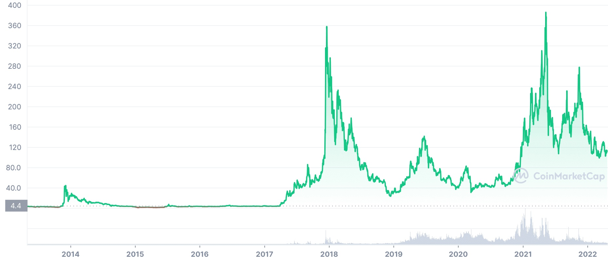

Litecoin Price Prediction for End of 2025: In-Depth Analysis and Insights
The information in this article is provided for educational purposes only and is not investment advice. Cryptocurrency investments carry significant risks, and past performance is not indicative of future results.
Introduction
As of August 20, 2025, 01:20 AM EEST, Litecoin (LTC) is trading at approximately $65.20, maintaining its position as a leading cryptocurrency for fast, low-cost peer-to-peer transactions. Created by Charlie Lee in 2011 as a "lighter" alternative to Bitcoin, Litecoin uses a Proof-of-Work (PoW) consensus mechanism with the Scrypt algorithm, offering faster block times (2.5 minutes) and lower fees. Widely adopted for payments and as a store of value, Litecoin remains a top-10 cryptocurrency by market cap. This article provides a comprehensive analysis of LTC’s price outlook for the end of 2025, exploring bullish and bearish scenarios, key growth drivers, and potential risks based on current market trends and ecosystem developments.

Current Situation
As of August 20, 2025, Litecoin’s price is around $65.20, reflecting a 15% increase from $56.70 in June 2025 but down 84% from its all-time high of $412.96 in May 2021. Over the past 30 days, LTC has recorded 52% green days with a volatility of 5.8%, indicating moderate stability. The Fear and Greed Index at 64 (Greed) suggests bullish market sentiment, driven by Litecoin’s growing adoption in payment systems, integration with platforms like PayPal, and its role as a testing ground for Bitcoin upgrades (e.g., SegWit, Lightning Network). With a market cap of approximately $4.9 billion and a circulating supply of 75 million LTC, Litecoin’s daily trading volume of ~$300 million reflects steady liquidity.
Price Predictions for End of 2025
Analyst forecasts for Litecoin by December 2025 vary due to its correlation with Bitcoin and broader market dynamics.
- Bearish Scenario: A projected 30–50% market correction in early 2025 could push LTC’s price to $45–$55, especially if Bitcoin underperforms.
- Moderate Scenario: Most analysts predict LTC trading between $80 and $120, supported by steady adoption and a recovering crypto market. CoinPriceForecast estimates $100 by year-end, a 53% increase from current levels.
- Bullish Scenario: In a strong bull run, fueled by Bitcoin’s post-halving momentum, LTC could reach $150–$200. Some optimistic projections suggest $250 if payment adoption surges.
A realistic range is $80–$150, with an average around $100–$120, reflecting Litecoin’s historical correlation with Bitcoin and its utility in payments.
Factors Driving Price Growth
- Payment Adoption: Litecoin’s fast transactions and low fees make it a preferred choice for merchants, with integrations on platforms like PayPal and BitPay.
- Bitcoin Correlation: As a close cousin to Bitcoin, Litecoin benefits from BTC’s market rallies, particularly projected for Q1 2025 post-halving.
- Technological Upgrades: Adoption of Bitcoin-compatible upgrades like SegWit and Lightning Network enhances Litecoin’s scalability and utility.
- Institutional Interest: Growing acceptance by financial institutions and potential ETF approvals for Bitcoin could indirectly boost LTC’s price.
- Community Resilience: Litecoin’s long-standing presence and active community support its stability and gradual adoption.
Risks and Downward Factors
- Market Volatility: A projected 30–50% market correction in early 2025 could drag LTC’s price down, given its correlation with Bitcoin.
- Competition: Faster and cheaper blockchains like Solana or stablecoins like USDT could reduce Litecoin’s appeal for payments.
- Regulatory Risks: Stricter global regulations on cryptocurrencies could limit LTC’s accessibility or exchange listings.
- Limited Innovation: Litecoin’s reliance on Bitcoin’s technology may hinder its ability to compete with newer, feature-rich blockchains.
Volatility Analysis
From July to August 2025, Litecoin’s price rose from $60.50 to $65.20, a 7.8% gain with a volatility of 5.8%. Technical indicators show mixed signals: the 50-day Simple Moving Average (SMA) is rising at $63.80, suggesting short-term bullishness, while the 200-day SMA at $70.10 indicates longer-term resistance. The Relative Strength Index (RSI) at 48.5 reflects a neutral market, neither overbought nor oversold. Litecoin’s historical resilience during bear markets and its role as a payment-focused cryptocurrency support its potential for growth. A projected market recovery in Q1 2025 could drive LTC toward $100–$150, especially with increased merchant adoption and trading volume.
Conclusion
By the end of 2025, Litecoin’s price is projected to range between $80 and $150, with a moderate forecast of $100–$120, driven by its adoption in payments, correlation with Bitcoin, and technological upgrades. However, investors should remain cautious of market volatility, competition from newer blockchains, and regulatory uncertainties. Thorough research and risk management are essential before investing in Litecoin. Consulting financial experts is recommended to navigate the volatile crypto market.